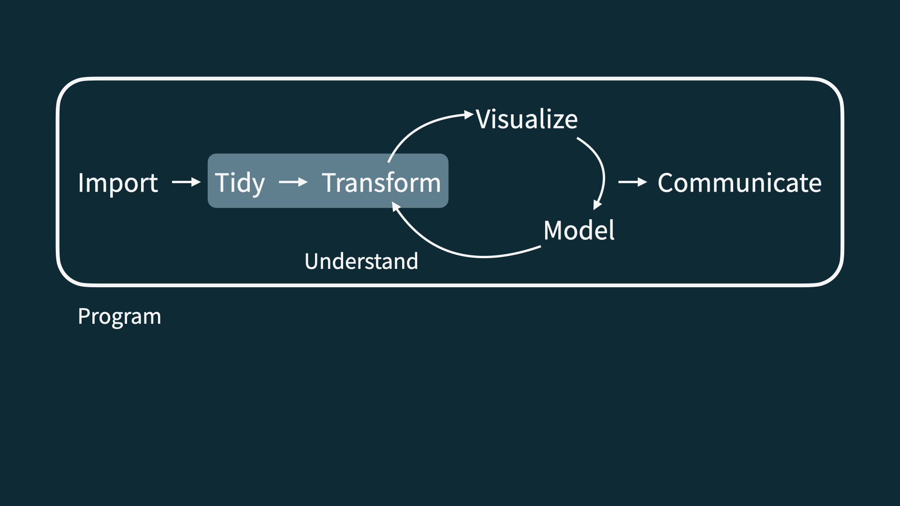
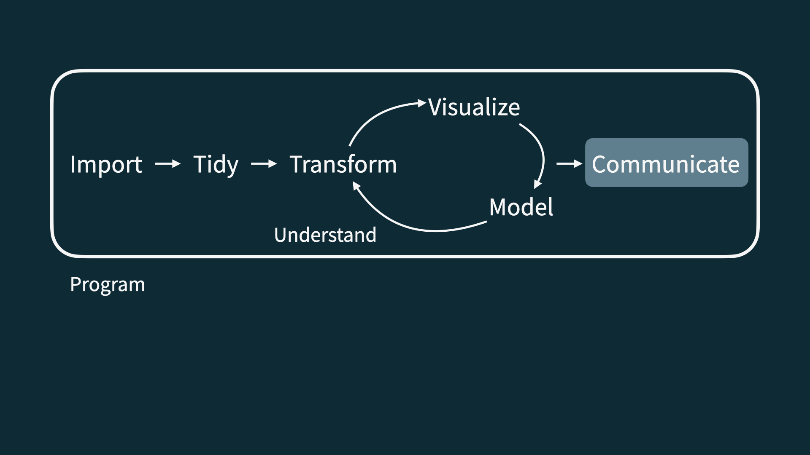

03:00
Welcome to MATH 246
Lecture 0
Welcome to Intermediate Statistics!
Meet the prof
Dr. Joash Geteregechi
Ass. Professor of Mathematics
Office: Williams 311E
Meet the TA
Name: Earth Sonrod,
Have image of Earth here
Meet each other!
Meet Inter. Stats
Statistics is an exciting discipline that draws useful insights from data.
We’re going to learn to do this using a statistical programming language called
R– more on that later!This is an intermediate statistics course, so the assumption is that you already know some basic concepts in statistics. Efforts will be made to remind you the most important concepts.
Software
Why not just Excel?

Why R?

R via RStudio

Data science life cycle
Data science life cycle

Import

Tidy + transform

Visualize

Model

Understand


# A tibble: 5 × 2
date season
<chr> <chr>
1 23 January 2017 winter
2 4 March 2017 spring
3 14 June 2017 summer
4 1 September 2017 fall
5 ... ... Communicate

Understand + communicate

Program

Let’s dive in!
Application exercise
Or more like demo for today…
Course overview
Homepage
- All course materials
- Links to Canvas, GitHub, RStudio website, etc.
Course toolkit
All linked from the course website:
- Access RStudio at posit cloud
- Discussions: Canvas Discussion Forums
- Assignment submission and feedback: Canvas Gradebook
Activities
- Introduce new content and prepare for lectures by completing the readings and/or watching the videos.
- Attend and actively participate in lectures and labs, office hours, team meetings
- Check your understanding by completing CPA assignment
- Attend class to dive deeper into the material and learn how to apply it in the real-world contexts.
Exams
Two midterm exams.
Each exam comprised of two parts:
In class: 55 minute in-class exam. Closed book, one sheet of notes (“cheat sheet”, no larger than A4, both sides, will be allowed this must be prepared by you) – 60% of the grade.
Take home: The take home portion will comprise of data analysis is R. Copilot may be used, but all the prompts should be written down as comments. If the code produced is incorrect for some reason, state the errors and explain how you fixed them – 40% of the grade.
Caution
No make-up exams will be given.
Project
Dataset of your choice, method of your choice.
Teamwork. Every group member must list their role in the project.
Presentation and write-up.
Peer review on content, peer evaluation for team contribution.
Some lab sessions allocated to working on projects, doing peer review, getting feedback from TAs.
Caution
You must complete the project to pass this class.
Teams
- Assigned randomly by me at beginning of semester
- Will be shuffled mid-way into the semester with input from you
- Project: Each team will meet to discuss another team’s project and provide written feedback. Each team member can choose a specific role in peer review.
- Expectations and roles
- Everyone is expected to contribute equal effort
- Everyone is expected to understand all code used to do the analyses of your report.
- Individual contribution evaluated by team members, my observations, etc.
Grading
| Category | Percentage |
|---|---|
| CPA’s | 0% |
| Labs | 35% |
| Projects | 20% |
| Exams | 20% |
| Final Portfolio | 20% |
| Labs | 35% |
| Att & Participation | 5% |
| Application Exercises | 5% |
See course syllabus for how the final letter grade will be determined.
Support
- Attend office hours
- Ask and answer questions on the Canvas discussion forum
- Reserve email for questions on personal matters and/or grades
- Read the course support page
Announcements
- Posted on Canvas (Announcements tool) and/or sent via email, be sure to check both regularly.
- I’ll (try my best to) send a weekly update announcement each Friday, outlining the plan for the following week and reminding you what you need to do to stay on track.
Diversity + inclusion
It is my intent that students from all diverse backgrounds and perspectives be well-served by this course, that students’ learning needs be addressed both in and out of class, and that the diversity that the students bring to this class be viewed as a resource, strength and benefit.
- Please let me know your preferred name and pronouns on the Getting to know you survey.
- If you feel like your performance in the class is being impacted by your experiences outside of class, please don’t hesitate to come and talk with me. I want to be a resource for you. If you prefer to speak with someone outside of the course, your advisors, and deans are excellent resources.
- I (like many people) am still in the process of learning about diverse perspectives and identities. If something was said in class (by anyone) that made you feel uncomfortable, please talk to me about it.
Accessibility
The Student Accessibility Services (SAS) is available to ensure that students are able to engage with their courses and related assignments.
I am committed to making all course materials accessible and I’m always learning how to do this better. If any course component is not accessible to you in any way, please don’t hesitate to let me know.
Course policies
Late work, waivers, regrades policy
- We have policies!
- Read about them on the course syllabus and refer back to them when you need it.
Wrap up
This week’s tasks
- Complete Lab 0
- Computational setup
- Getting to know you survey
- Read the syllabus
- Start readings for next week